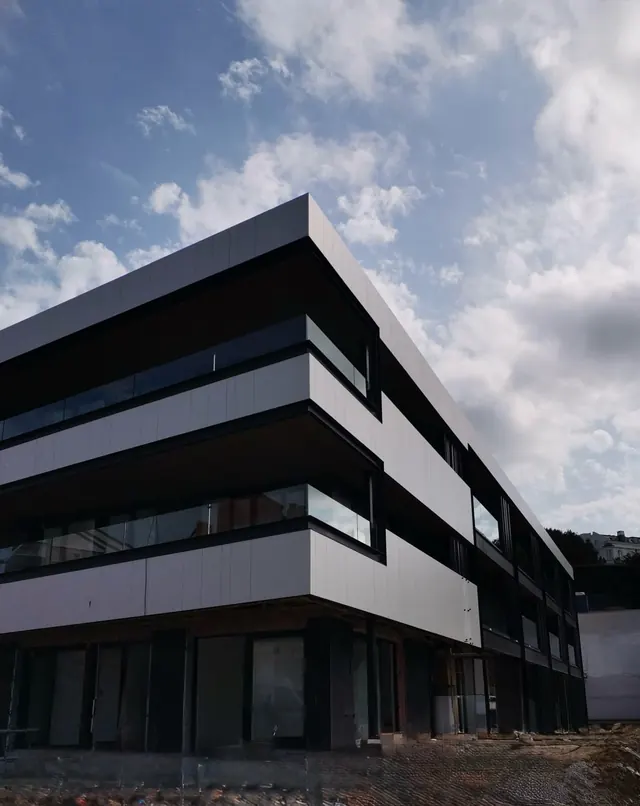
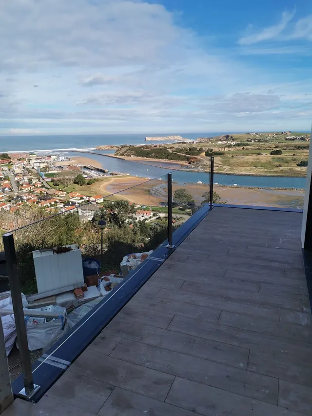
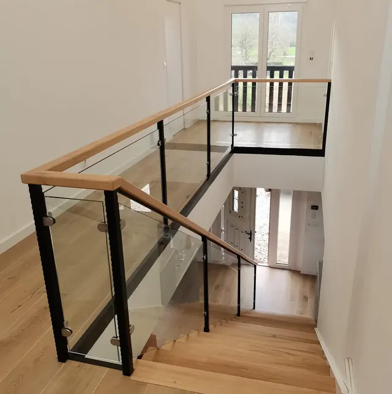
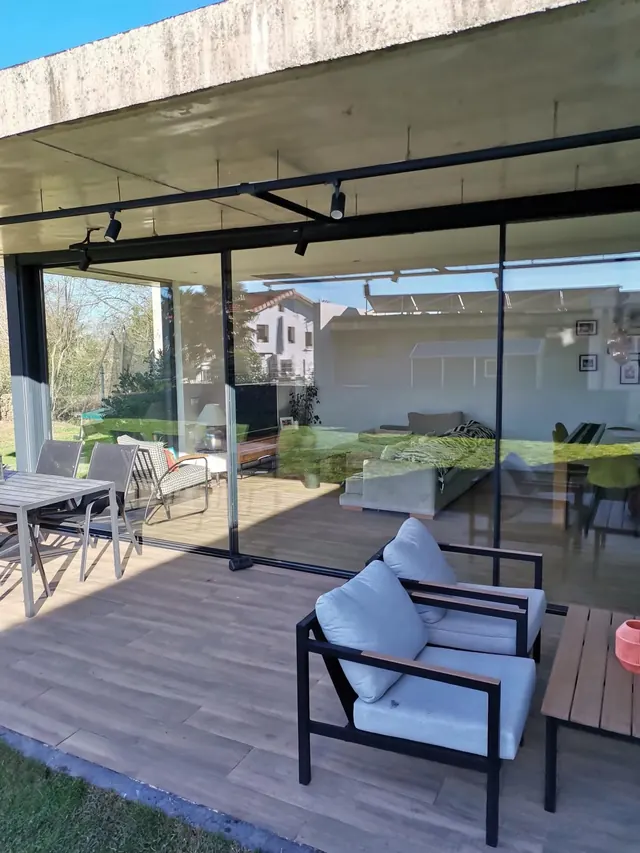
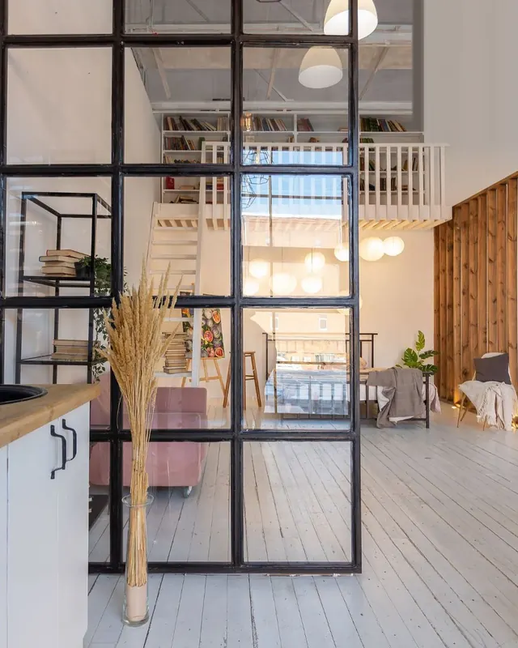
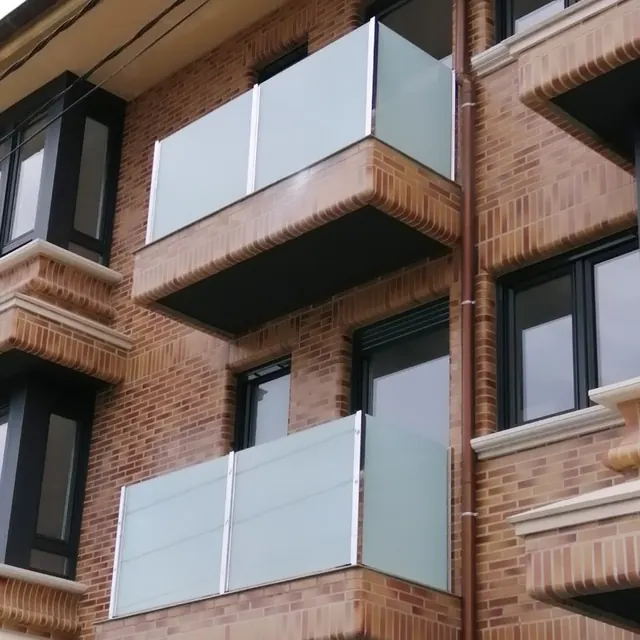
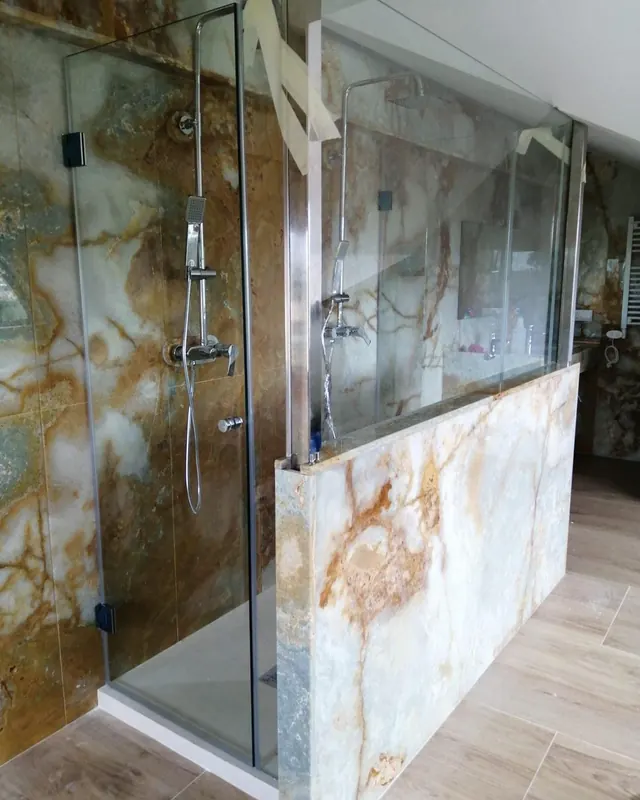
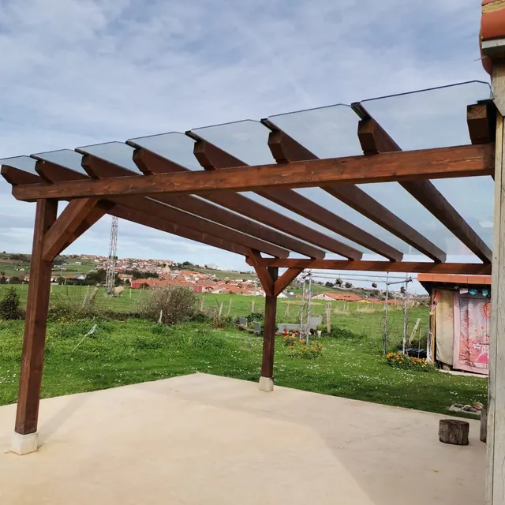

Un paseo por las obras
Desliza la tira con el dedo.

ObraLaminar 8+8 con perfil
Barandillas de un edificio de tres plantas.

TerrazasTerraza con vistas
Barandilla de vidrio sin montantes.

EscalerasSubida de escalera
Vidrio con pasamanos de madera.

CerramientosPorche con cortina de vidrio
Abierta casi no ocupa; cerrada, protege del tiempo.

PuertasSeparación de espacios
Vidrio con perfil negro entre cocina y salón.

ObraBalcones en un edificio
Vidrio de seguridad mate.

MamparasMampara de baño
Junto a una pared de piedra natural.

TechosPérgola con tejado de vidrio
Vidrio de seguridad sobre madera.
Todos, por tipo
Pulsa en una foto para verla en grande y pasar a las siguientes del mismo tipo.
Mamparas de baño
Escaleras y barandillas
Terrazas y balcones
Cerramientos y techos de vidrio
Puertas y divisiones
Espejos y vidrio decorado
Obra, fachadas y locales
¿Quieres algo parecido en tu casa?
Mándanos una foto de lo que te gusta y de tu sitio, o ven a la exposición de Heras. Te damos presupuesto sin compromiso.
También en el 942 54 16 38 o en presupuestos@vidriosjucar.com. Lunes a viernes, de 9:00 a 14:00 y de 15:00 a 18:00.